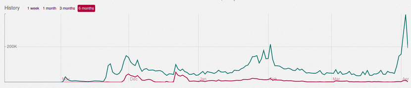

The saga of Twitter, Inc. has been rejuvenated in 2017 by Tump's antics, corporate drama, and an amalgam of user and non-user disquiet with its decisions, though its financial viability has been in prominent industry conversation for half a decade. Since the service's pre-2010 outset, many 'a' feature has accumulated on its original, still-iconic skeletal software, and - though the net is undoubtedly positive - a few have gone.
Last Thursday, the company revised in bravado its poultrian default profile picture and its system of replies to exclude @s on all of Twitter's proprietary services, drastically changing two of its visual mainstays, and prodding a particularly lucent cacophony. Turn your ear, and you'll hear many familiar terms in the chants: limits, chains, strings, harassment, feedback, gamergate, nazis, etc.
These conversations are important, but they've gotten awfully stale.
If you listen a bit more carefully, though, you'll intercept a new one: Mastodon.
It's the open source brainchild of Eugen Rochko who's known colloquially as Gargron.
He's had one hell of a week.
Between the night of our first emails and the time of our conversation, his flagship
mastadon.social instance had doubled in users. Less than two hours after we said our goodbyes, his name was on
The Verge's front page, just under the new iPad review. Graciously, he lent me his time just after breakfast on Tuesday to tell
his place in the story of federated social, while the most significant day of his life was reverberating around him.
"I'm perfectly fine with being called Eugene by Americans."
Though the ink's still fresh on his compsci diploma, he's clearly prepared for the American press.
What's the story behind the project? Do you remember a specific moment when you decided to do this?
Many years ago, I had a friend that was really into federated networks when they were a new thing. That was when
identi.ca was first created - at the very beginning of my developer knowledge and career.
A good portion of the stories written so far on his platform have framed it as an alternative to Twitter, which early Masto adopters refer to as "Hellbird," or "the bird website." Eugen isn't afraid to acknowledge his investment in the format.
I was a heavy Twitter user and I wasn't happy with where [the company] was going, so I decided to check on how the federated stuff was doing in the meantime. I found it in a very sad state, but thought I could contribute.
He began building on his own, with Tweetdeck's standard in mind.
I thought 'if I'm going to do something, it needs to have realtime updates and it needs to have columns.'
I started with a bare-bones prototype while still [at University] in May or April of last year. It had no user interface, only an API that I was using from the command line. And I thought 'okay, it works. that's great.' Then, exams came.
Academics had to come before the project at first, but it soon supplied an ample post-graduation diversion. He focused his energy on building something more complete and eventually launched a
Patreon page.
I
announced it on HackerNews, and that was the first public release of the project. That's when I got my first users who weren't my friends, and some who were new to federated networks.
That was just over 100 days ago, and it gave way to his first feedback.
I started working on the first feature requests, shaping the project a bit differently. People were a lot more focused on privacy features than I thought they would be, although in retrospect, it makes sense. The previous [federated] project - GNU social - did not really have a focus on privacy features, or anything built in by default.
It compelled him to change things, and his work was well received.
Over time, I kept working on new features, and waves of new users came when it went viral in certain circles. The first was HackerNews and Product Hunt.
Aral Balkan - a Twitter user with over 30,000 followers - picked up the project, gave it a shout out, and even did a giveaway of his app. He had a lot of followers from Holland; the Mastodon timelines became mostly Dutch.
Next was Marxist anime Twitter (including Extratone and I.)
Lots of furries; lots of LGBT people. That's when I really focused on privacy features and making sure all blocks worked because these individuals needed a safer platform than Twitter could offer.

Sidekick dashboard background processing jobs as of Tuesday morning.
"As you can see, the first bump is HackerNews, the second is Aral Balkan, and then anime/Marxist Twitter."
And the last - now a bit out of date - is this week's spike, which is nearly double all previous waves.
Are you responsible for all of the code?
You can look at the
GitHub page to see a specific breakdown of who contributed and how many lines of code, each. You'll see I'm at the top by a large margin, but there are [additional] people who've contributed interesting, good features & fixes, localizations, user guides, and documentation.
What's the story behind the name?
It's not particularly interesting. I'm a progressive metal fan, and I listen to Mastodon sometimes. They have a really cool name that refers to a really cool animal. It's a fluffy elephant! What's not to love?
It's also the inspiration for Mastodon's mascot, which was penned by Rochko's YouTuber friend
Dopatwo after he realized how urgently he required an error page.
What does "federated" mean to you?
The biggest problem with this term is that it's new for lots of people. People who've come across federated networks in the past instantly understand what it means and how it works, and people who are new to the concept have a lot of trouble before it clicks. But when Twitter first started, people didn't understand what 'retweeting' meant, so it's not a unique problem domain.
I don't know where it comes from - maybe BitTorrent - but people seem to think that when something is 'decentralized,' everybody gets the same thing; that it's all synchronized one to one. In actuality, 'federated' means that people in different instances can talk to each other, but the content is different depending on the users there, what they do, and who they follow.
Though instances are infrastructurally independent, they can communicate with one another. On a user level, timelines are still determined by who you do and do not follow across the entirety of all instances.
What if Twitter comes to you in the near future with a job offer?
[Rochko laughs]
If it was any other company, I would think about it. A job is a staple source of income, and - depending on the company - could involve doing something important, but I have zero faith in Twitter.
Does this all mean that I finally get to live out my serif Twitter dream?
Yes, I suppose on your own instance, you could change the stylesheet...
So if I set up my own instance and started charging for its use, I'd be in the clear, legally?
Yes, that's okay. The code is licensed under
AGPL version three, which I picked because other projects in the same space are using it. The difference between AGPL and GPL is that [the former] forces you to contribute back to the appstream code repository if you make any breaking changes.
For example, Eugen explained that WhatsApp originally used XMPP for its chat protocol, which meant that Facebook and Google Talk users could connect to it, too. However, the developers systematically locked down the platform over time, leaving virtually nothing visible that was unique to XMPP in its current iteration.
To prevent somebody taking Mastodon code, placing it behind locks, and stripping out the federation part to make Twitter II, I'm using this license.
The thing to remember about free software is that 'free' means freedom of the user, not that it's zero cost. It's perfectly fine to charge for free software because developers need to live, too.
I've seen a lot of multilingual 'tooting' these past few weeks. Can we expect an in-app translate function like Twitter's on Mastodon?
I don't think I could put in a 'translate this toot' button because APIs from Google and Bing are quite expensive at scale. I'm not 100% promising this, but I can probably put something in where people can select which language they post in, and then just filter the timelines. That would at least solve the problem of being confronted with lots of French posts, without knowing any French.
The only complaint about Twitter I remember that hasn't already been addressed here is the capability of editable 'toots.' Is that a possibility?
That won't happen. There's actually a good reason why they don't do that. It's simply because you could make a toot about one thing, have people favorite it and share it, link it from other places, and then suddenly, it says 'Heil Hitler,' or something.
It's a bit preposterous to continue the conversation as if Twitter and Mastodon are interchangeable entities. They exist in separate ideological and mechanical spheres, and will both continue to do so for a very long time.
That said, the fundamental user interface design and current cross-community user saturation do warrant comparisons between their functions. More likely than not, you'll create a Mastodon account because a link found you on Twitter, use it because you prefer its type of ecosystem, and you'll stay after realizing that nearly all of your age-old qualms have been addressed, if not already rectified. While FOSS and Federated may seem at times like jejune ideologies, their advantages are especially tangible in this context. Should you find yourself needing to complain about something, you'll find an audience. Perhaps it'll be your command line.
It's nothing but negligent to describe Mastodon as an alternative or clone.
It's more like Twitter's son.
It's leaner, quicker-to-change, much more flexible & democratized, and less corrupt. Though I didn't ask its creator what he intended to gain from all his effort, I think his commitment itself denotes a preoccupation with progress. Those of you who've been let down by the tools you've been given to control your words' exposure will find startling competence in your ability to control per-toot privacy, or reserve your raucous photos and terrible memes from followers who are not necessarily complicit consumers. Naturally, it's also much less dependable, though a single instance outage will never leave you truly, completely silent. And the support will come.
It's been a privilege to be observer and participant in the first lightening of a new online community. In the moment, we enjoy our lavender haze - when the spaces are filling primarily with users who are sincerely interested enough in discourse to have sought it out.
Sarah Jeong's
account of her Twitter exile is a good, long read if you're craving more specifics, and Eugen's
Medium offers a more complete explanation of federation and its place in the industry, straight from the source. Apparently, he's just as articulate with words as he is with code.
If I had to hazard a guess, it's not the last we'll hear from him.